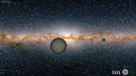
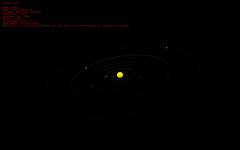
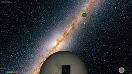
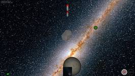

Project
mElite is a computer game based on the seminal 1984 game Elite by David Braben and Ian Bell. The game was developed as a project connected to the course Grafica al Calcolatore (Computer Graphics) at Universitá degli Studi di Verona held by Andrea Fusiello. The game was developed by Jan-Philipp Kappmeier (at TU Berlin) and Melanie Schmidt (at TU Dortmund) within three months from December 2006 to February 2007. With exception of the C core part that was given, the game is completely written in C++.
{kind=link}
The goal of the project was to create a graphical extension to TextElite by Ian Bell. TextElite is a C implementation of the core of the original game that can be played in a text adventure style. It includes the data of all the classic Elite universe, such as the galaxies, star systems and the trading engine, but omits the quests of the original game. Furthermore, as this is only a trading simulation, there are no fights included and there is no risks of misjumps or Police and Pirate attacks. Our extension sticks to the restriction, that misjumps are not possible, but includes a 3d environment of the target systems that contains the Coriolis trading station, Police and Pirate ships. Notice, that there is also no quest system implemented.
mElite
mElite is a space shooter with additional trading capabilities. The player is flying a trading space ship that can jump between several systems using the hyper space. In each system, one can trade goods in a Coriolis space station. This might be dangerous as Pirates or Thargons lurk around to attack unsuspecting traders. The Coriolis is protected by Police space ships. One might think, that the police can help Merchants in fighting Thargoids, but as of yet, the Police has to proof its helpfulness...Gameplay
The game starts in the system Lave. The player's ship is already heading to the Coriolis, that can be seen in the radar. The ship is equipped with some amount of fuel to fly to a different system and with 4 missiles and some goods. The player has to try to reach the Coriolis without beeing destroyed by attacking Pirates, sell and buy some goods and fly to another planet. But: be careful! Besides the obvious enemies, there are different ways to waste the ship (and a life). Coming too near to a planet or a star hands the ship to the huge gravity and leads to a total crash of the player's ship.
Trading
 The ship has a cargo bay, which is empty when the game starts. The space can be used for trading goods, which can be sold and bought in each system. The prices and availability of the goods depends on the system and its properties. The governmental state and the technology level have a huge influence on which goods are produced at which prices and which goods are needed mostly. Of course, products that are easy to produce tend to be cheap to buy, and goods that are hard to get are expensive to be sold. For example, a fundamental state might have a higher demand of firearms than a highly developed democracy might have. In contrast, they may sell cheap slaves. In the same manner, an agricultural planet may easily produce an excess of food that can be sold to highly developed states with a dense population.
Of course the player has to take into account, that both, her money and the available room in the ship is limited.
The ship has a cargo bay, which is empty when the game starts. The space can be used for trading goods, which can be sold and bought in each system. The prices and availability of the goods depends on the system and its properties. The governmental state and the technology level have a huge influence on which goods are produced at which prices and which goods are needed mostly. Of course, products that are easy to produce tend to be cheap to buy, and goods that are hard to get are expensive to be sold. For example, a fundamental state might have a higher demand of firearms than a highly developed democracy might have. In contrast, they may sell cheap slaves. In the same manner, an agricultural planet may easily produce an excess of food that can be sold to highly developed states with a dense population.
Of course the player has to take into account, that both, her money and the available room in the ship is limited.
Certainly, Coriolis also sells fuel (which cannot be sold by Merchants). This fuel is necessary to perform hyperjumps to other planets. So, Merchants should always save some money to travel to the next system!
Travelling
Depending on the amount of fuel, the player can reach some of the neighboring systems. The ship contains a map that also highlights the reachable planets and contains some information about them. It is safe to travel through hyper space. That means, there is no risk of a misjump or an attack by pirates on the way. Whenever the player reaches a new system, she is given the known information about the system in an overview that can be reviewed again later.
{kind=link}
Fighting
When flying in any system, the player may be involved in fights. The Merchant ship is capable of defending itself using a laser and missiles. The laser should be used with caution, as it may overheat and that cannot be used until it is cooled down. The number of missiles is limited to four, so they should also be used with reason. The ship has a shield to defend itself against the evils in space. The shield consists of two parts for the bow and tail of the ship. Whenever a laser beam hits the shield, it looses some of its capacity. However, when the shield is not demanded, its strength is recovering slowly. The ship is destroyed when it hits another ship.
The major entities in the mElite world that the player interacts with, are the Pirates. They lurk around in each system, usually in some distance to the Coriolis as they are in fear of the police. When they get notice of a Merchant, they attack it with lasers in order to destroy the ship and steal the load.
The most destructive threat are the Thargoids. They act irrational, wait for Merchants and try to destroy them, wenn noticed. They do not have lasers or missiles but try to hit the ship of the player, such destroying both, themselves and the Merchant.
The Police guards the Coriolis station. They fly around the station on a triangular route. Normally they ignore Merchants, but if they are hit by a laser, they fight back. Sadly, they seem not to have problems with Pirates or Thargoids.
The Coriolis is a spinning space trading station. It cannot defend itself, thus is protected by the Police. If someone is foolish enough to attack the station, the poor attacker will have to fight all Police ships immediately. The station has an entrance at one side that has to be reached by the player to trade goods. Luckily, hitting the station does not destroy ships.
Besides the enemies and the Coriolis station, there are other Merchants flying around. They travel from planets to the Coriolis station and return. The Merchants are peaceful, their ships do not have weapons and they do not attack. Despite that, the player can of course attack Merchants and destroy their ships. However, this will destroy any goods that the Merchant possibly carried, thus nobody gains anything by such violent actions.
{kind=link}
{kind=link}
{kind=link}
{kind=link}
{kind=link}
Downloads
mElilte is hosted on GitHub, the current release is v1.0.0. The following downloads are also available on the project page.
-
mElite 1.0.0 (25.5 MiB)
The binary version of mElite. This is a 32-bit Windows application using OpenGL. The necessary libraries are included.
md5:
-
Manual (1.6 MiB)
A short and simple manual for text elite as PDF document.
md5:
-
Source Code (136 KiB)
C++ source code. This package does not contain the textures or the object files for the ships. They have to be downloaded separately.
md5:
-
Doxygen Documentation (1.6 MiB)
Doxygen HTML documentation of the classes. The documentation is also browsable online.
md5: 81f7c7253e2012257c4c68b5a3b2b6d3
-
OpenGL Header and Libraries (663.5 KiB)
The necessary OpenGL header, libs and DLLs. The header have to be copied to the C++ include directory, the libs to the lib directory and the DLLs to Windows/System32.
md5: 4644584075b4812393a84004741dc1cf
-
Textures (82.5 MiB)
The textures needed for playing mElite.
md5: 99f0e99287ed6735d94ed2d828af1b3b
-
Object Models (181 KiB)
The 3ds-files containing the models of the game objects.
md5: d41aac9582b379358cf35338cab6820b
Technical Details
Game Objects
The world of the 3d environment and the objects within the world are modeled in the way described by the class diagram. All the objects share one single property: a position in the 3-dimensional world. The other objects then split up in objects that can be seen (and thus have a method to draw them) and objects that only exist in the virtual space, such as the player and the camera. The visualization again splits up in two different type of objects. Simple quadric objects, that are only represented by a quadric from the GLU library such as planets (which are basically spheres) and objects with a triangular model, such as the space ships. The models for the ships are loaded from 3ds files (which is the official file format supported by 3ds Max).
To reflect the different types of objects, additional classes were needed. Of course, stars and planets differ because stars emit light. Again, the different types of space ships differ in their behaviour.
{kind=link}
All objects in the game own a surrounding sphere that is used for collision detection. This detection is performed in a straight-forward manner by just checking the order of n² possible collisions. This is fast enough, as the number of objects in space is quite limited. Collision detection also takes place if a laser is shot. In this case, it is checked if the ray starting from the emission source intersects any of the collision spheres.
Graphics
The visualization mainly uses simple OpenGL commands. Used techniques include depth buffering, texturing (including mip mapping), blending, and billboarding. To get a nice appearance, all textures were created in different (and also huge) sizes up to 4096x2048 pixels. Loading of textures is only implemented for simple file formats, such as Bitmap and Targa, which makes the final product to use a lot of space.
The universe itself is a huge skybox textured with some space image. Planets and stars are spheres textured with appropriate textures, stars also emit light. Using billboarding and blending, stars are also equipped with a small corona to create a more realistic setting. Both, planets and stars, spin around their center axis, although, to see some effect, they spin faster than they would spin if they were real objects. To allow a more diverse scenery, some textures for planets and stars have been created; some of them are quite extravagant, like a green glowing star. Additionally, existing textures from the planets of the terrestrian solar systems and images of the universe provided by NASA have been used.
To allow a view behind, the scene is rendered twice for each frame. The first rendering shows the rear view. This image is then stored in a texture and used to represent a small mirror in the players space ship.
Modelling the World
The original game data is delivered by the C program TextElite. This program is hidden using a Wrapper that provides all data that is needed. As TextElite is only a text adventure, information about graphical representation of solar systems is missing. This information has been computed using random numbers. Thus, systems are built in the following manner: they consist of a small number of planets surrounding a center star. The distance of planets is approximateley increasing from the inner to the outer systems. Note that the terrestrial solar system perfectly follows this scheme (with exception of the asteroid belt). After each jump to a different system, an informational view of the system is displayed that allows rotating the system in arbitrary manner.
{kind=link}
Opponents
The opponents are not equipped with great artificial intelligence. Pirates are placed at a fixed position and wait until a Merchant is careless enough to come near to a pirate. They then immediately try to reach the Merchant and shoot with lasers. They will try not to hit the Merchant, but stay near enough to destroy it. Thargoids are not so careful. Whenever they see a Merchant, they try to hit and destroy it. Police vessels mainly ignore everything else. They fly in triangular routes around the Coriolis station. But, if they are attacked, they behave exactly as Pirates: they try to reach the opponent, but not to hit it and shoot with lasers. If the station is attacked, they all act together.
Images
|  | The player is heading to the Coriolis station. |
|  | A Pirate is attacked using two missiles. |
| A dangerous situation. A Thargoid in front and a Pirate behind. | |
| After the Coriolis station was attacked, all Police ships attack united. | |
| A Pirate is attacking! The shield is already half down. | |
| Another solar system with a red star. | |
| An attempt to land in the Coriolis station. |
{kind=link}
{kind=link}
{kind=link}
{kind=link}
{kind=link}
{kind=link}
{kind=link}